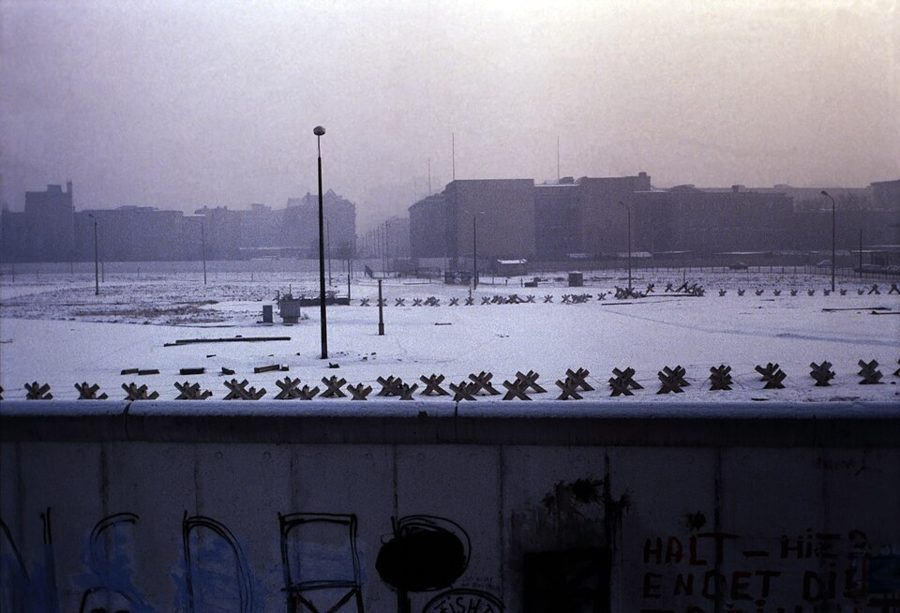
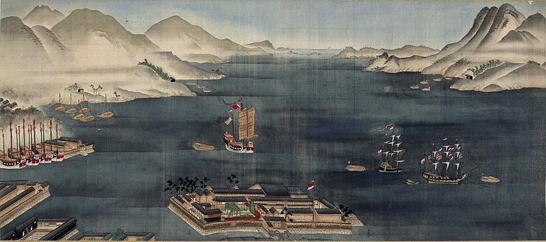
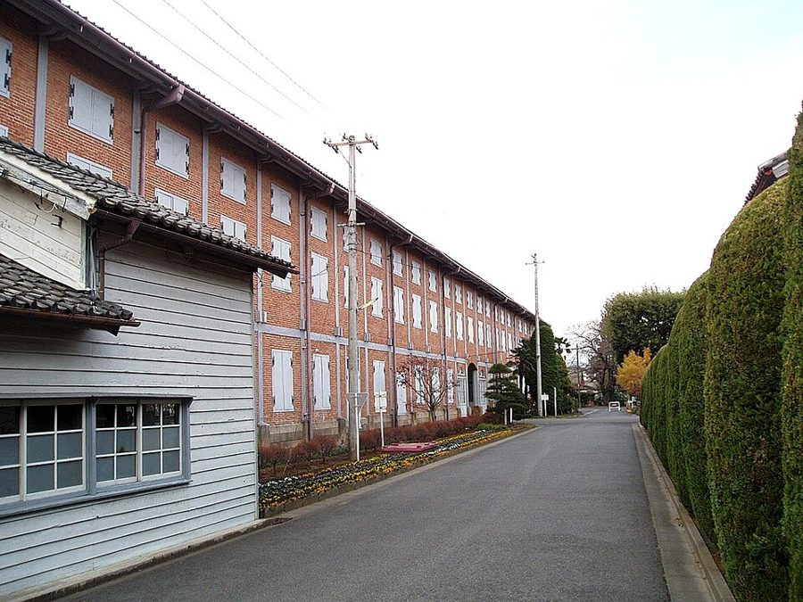

这一章在做什么
这一章拿第 1 章的价格工具去看各种管制，从国际贸易讲起。作者说经济学家几乎一致赞成自由贸易，关税却到处都是，因为每个行业都打着公共利益的旗号护着自己。他用一个汇率推演说明低工资国家抢不走美国人的饭碗，再逐条拆关税的理由，主张美国单方面放开。接着拿东西德、明治日本对独立后的印度做对照，说明计划和管制的代价；最后回到美国，说经济管制已经伤到言论和宗教自由。读的时候抓两条线：谁从管制里得益，谁买单；自由能不能拆成几块分别对待。

1970 年代末，从西柏林的观景台望向波茨坦广场：前面是柏林墙，后面是东德一侧的禁区和拒马。作者在 §3 写到，他们也排队过了这道墙，去东柏林待了一会儿。Rüdiger Stehn，CC BY-SA 2.0，维基共享资源 读之前：先下注
第 1 章给了两样工具：价格的三种功能，政府的四项职责。这一章第一次拿它们去对付具体的政策，先是关税和配额，再是整套的中央计划，最后是美国国内的各种许可和管制。§2 里作者会说，汇率也是一种价格，和木材的价格一样传信息、给激励；第 1 章 §6 留下的那个例子（明治维新后三十年的日本）也在这一章兑现。后面第 7 章讲监管机构，第 9 章讲通胀，第 10 章讲「特殊利益」为什么总能得逞，都从这里接出去。
假设日本工资低，按当时的汇率，从电视机到牛奶，样样都比美国造得便宜。美国要是完全放开进口，最可能发生什么？
美国工厂成批倒闭，失业长期居高不下
美元会对日元跌价，日本货变贵，两国买卖大致拉平
美国只能靠借债买日本货，欠的越来越多
美国工人的工资会被一路压到日本的水平
日本会趁机抬价，美国消费者反而吃亏
1867 年明治维新时的日本，和 1947 年刚独立的印度，各自往后三十年。作者认为哪边起点更好？后来的差距主要从哪里来？
日本起点更好，所以跑得更快
印度起点更好，日本跑得更快，因为日本人更勤奋、文化更合适
印度起点更好，日本跑得更快，因为日本主要靠市场，印度靠计划和管制
印度起点更好，日本跑得更快，因为明治政府的产业政策更高明
两边差不多，日本快是因为后来对外扩张
既然几乎所有经济学家都说自由贸易对各国有利，为什么关税和管制到处都是？管得越多，丢掉的只是钱吗？
作者说「保护」其实是在剥削消费者。他用什么推演说明，低工资国家不可能把美国人的生意全抢走？§2
几百年的争论里，作者承认有三条支持关税的理由原则上可能成立。是哪三条？他为什么仍然主张单方面放开？§2
作者把日本和印度的对比称作近乎「对照实验」。这个实验控制住了哪些条件，可能漏掉了哪些？§3
投票箱和超市有什么不同？经济上的管制，怎么会伤到言论、出版和宗教自由？§4
这一章的论证骨架
开篇（§1）是一份提要，把后面三节各用一两句说了一遍，可以当目录读。§2 最长，分三个斜体小标题：经济理由、政治理由、国内竞争，其中经济理由占了大半，汇率推演和「三条例外」最要紧。§3 从发展中国家知识分子的看法讲起，主体是日本和印度的长篇对比。§4 回到美国，前半讲经济自由，后半讲人身自由，例子很碎，抓住每个例子各说明哪一种自由就行。
人人都护着自己的「特殊利益」· §1
结果：一座管制的迷宫，几乎人人吃亏
§2 国际贸易
§3 中央计划
§4 美国自己的管制
关税配额护着生产者
汇率推演：贸易自会拉平
三条例外，实际难成立
方案：五年内单方面放开
东德对西德
苏联对南斯拉夫
日本 1867 对印度 1947
方法决定结果，与目标无关
四成收入由政府花
执照、许可、表格
投票箱对超市
言论、出版、宗教受牵连
自由是一个整体：眼下该减少限制，不是增加 · §4
本站画的示意图。§2 的三个小标题里，「政治理由」那一段把自由贸易和国际和平连在一起，是从经济跨到政治的桥，§4 的结论在那里已经埋下了。 边读边填：每行一个问题，读到答案就写一两句。只存在你这台设备的浏览器里，别人看不到。
读完了？对照我找到的
诊断：几乎每个人，都在某个领域替自己的「特殊利益」辩护。
得与失：进口是得到的，出口是为进口付的代价。
汇率：美元对日元跌价，日本货在美国变贵、美国货在日本变便宜，直到两边买的大致相等。
例外：国家安全、幼稚产业、以邻为壑；幼稚产业论是烟幕。
对照：成长基础、留学的领袖、文官和铁路、工厂、更大更平的国土、大量外援；日本只碰上欧洲蚕丝歉收。
自由：石油公司高管、表态支持卡特管制的企业界、拿政府基金的学者。
分节地图
原书这一章没有给节编号。§1 是第一个小标题之前的开篇（照抄的是第一段开头几个词），§2–§4 的粗体是书里印的全大写小标题，Kindle 里可以直接搜。§2 和 §4 里还有斜体的小标题，不算一节。每一节下面自动标出纸书页码、在本章录音里大约第几分钟、译本里对应的小节名。建议分三次读；读完一节回来打个勾。
第一次坐下§1–§2 · 约 6300 词 · 自由贸易，全章最长；可以在斜体小标题 The Political Case 处歇一下
In discussing tariffs and other restrictions…约 600 词 斯密谈关税的一段原文，然后把全章三节的结论先各说一遍。译本这部分不单列小节。 INTERNATIONAL TRADE约 5700 词 经济理由、政治理由、国内竞争三段。抓汇率推演和三条例外。译本删了两处（英文第 42 段后半、第 49 段的一句），读这里请对照英文。 第二次坐下§3 · 约 3700 词 · 计划经济的对照：东西德、日本和印度
CENTRAL ECONOMIC PLANNING约 3700 词 从一位印度企业家讲起，主体是日本 1867 对印度 1947。译本没有译第 63 段和第 79 段，读这里请对照英文。 第三次坐下§4 · 约 2000 词 · 回到美国：经济自由和人身自由
CONTROLS AND FREEDOM约 2000 词 先算政府替你花了多少钱，再列执照和许可；后半讲石油业、学界、报业、阿米什人。
背景：作者默认你知道的事
按在书里出现的顺序排，标题前是节号。书写于 1979 年，书里的「今天」「近来」都是那时候。
§1 Pogo 的那句话Pogo 是漫画家 Walt Kelly 笔下住在沼泽里的一只负鼠。1970 年第一个「地球日」的海报上，Pogo 站在一地垃圾里说出这句话，原话是 he is us；它戏仿的是 1813 年美国海军准将 Perry 打赢伊利湖之战后的捷报「我们遇到了敌人，他们归我们了」。书里写成 they is us，是记错了一个词，意思不变：敌人就是我们自己。
§2 关税和「自愿」限制1930 年的《斯穆特-霍利关税法》（Smoot-Hawley）提高了两万多种进口品的关税，加拿大等国随即报复。到 1970 年代，美国更常用的是「自愿」限制：1977 年 5 月和日本签「有序销售协定」，三年里每年对美出口的彩电不超过 175 万台；书里说的纺织品出口配额也是这类安排。名义上是对方自愿，实际上是美国施压。
1929 年 4 月 11 日，众议员 Willis Hawley（左）和参议员 Reed Smoot。他们主持起草的关税法 1930 年 6 月签署生效。National Photo Company，公有领域，维基共享资源
§2 360 日元和「美元疲软」1949 年起日元固定在 360 兑 1 美元，二十多年没动。1971 年 8 月尼克松停止美元兑黄金，同年 12 月改成 308 日元；1973 年主要货币改为浮动汇率。美国通胀高，美元一路跌，1978 年 10 月底一度跌到约 177 日元，卡特政府 11 月 1 日推出一揽子「救美元」措施。作者写的「外汇危机」就是这些。
§3 柏林墙和艾哈德战后德国分成东西两部分，1961 年东德筑起柏林墙，1989 年才倒下。艾哈德（Ludwig Erhard）1948 年任英美占领区的经济管理局局长，1949 年联邦德国成立后才当上经济部长，1963 年接任总理。1948 年 6 月 20 日（星期日）的货币改革由西方占领当局颁布，艾哈德的手笔是几乎同时取消大部分物价管制，事先没有取得占领当局的批准。
1963 年 4 月，时任联邦德国经济部长的艾哈德，几个月后接任总理。Renate Patzek，CC BY-SA 3.0 de，维基共享资源
§3 南斯拉夫、以色列、埃及，和书里的旧称1948 年铁托（Tito）领导的南斯拉夫和斯大林决裂，此后搞「工人自治」，企业名义上归职工集体管理。以色列建国后到 1977 年一直由工党一系执政；埃及在纳赛尔时期把大批企业收归国有。书里用 Russia 指苏联，用 Red China 指中华人民共和国，这是 1970 年代美国的口语，现在不这么说了；书里列举地名的方式也是那时美国的写法。
§3 明治维新、出岛和「5% 的关税」明治维新通常记在 1868 年初，书里写 1867。闭关时代荷兰人被关在长崎港里一座扇形人工岛「出岛」（Dejima）上，不是书里说的大阪；中国商船也一直在长崎贸易。1850–60 年代的不平等条约把日本的进口关税压在 5% 左右，日本 1911 年才完全收回关税自主权。

19 世纪初的长崎港：前景挂荷兰旗的扇形小岛就是出岛，海面上是两艘荷兰船和中国帆船。画家不详，PHGCOM 上传，公有领域，维基共享资源 
群马县富冈制丝厂的东茧仓库，建于 1872 年。这座厂由明治政府开办，请法国人做技术顾问，正是书里说的政府「示范工厂」；1893 年卖给私人，2014 年列入世界遗产。2010 年摄。Hasec，公有领域，维基共享资源 §3 独立后的印度1947 年印度独立，尼赫鲁（Jawaharlal Nehru）任总理，1951 年起仿苏联搞五年计划，办厂、扩产、进口都要政府许可，后来被叫作「许可证统治」（License Raj）。表列种姓（scheduled castes）指被英国人列入法定附表、受特别照顾的低种姓，不是「排好等级」的意思。书里说印度一度「滑向独裁」，指 1975–1977 年英迪拉·甘地实行的紧急状态。
阿萨姆邦 Sualkuchi 村的一位织工。这里号称「阿萨姆的曼彻斯特」，全村以手工织机为业。2016 年摄，与本书年代无关。Bhrigu bayan，CC BY-SA 4.0，维基共享资源
§4 书里点到的人
Abraham Lincoln 林肯 1858 年竞选参议员时发表「分裂之家」演说，讲的是奴隶制。
James Schlesinger 能源部长 美国第一任能源部长（1977–1979）。
Henry Jackson 参议员 华盛顿州民主党参议员，1974 年在听证会上痛斥石油公司高管。
Donald Rumsfeld 企业界人士 当过众议员、白宫幕僚长和国防部长，1979 年在企业界任职。
George Meany 工会领袖 1955–1979 年任劳联-产联（AFL-CIO）主席，1979 年 11 月以 85 岁退休。
卡特的「自愿」管制：1978 年 10 月宣布，工资年涨幅不超过 7%，没有法律强制，靠政府施压。
§4 禁用的甜味剂、执照，和阿米什人甜蜜素 1969 年被禁；FDA 1977 年 3 月要禁糖精，国会当年立法暂缓，糖精至今没禁成。laetrile（苦杏仁苷）是从杏仁核提取的「抗癌药」，FDA 不认可。SEC 是 1934 年设立的证券交易委员会。阿米什人（Amish）是拒绝现代保险的新教团体，1960 年代初有农户因拒缴社保税被扣押牲口，1965 年起自雇的阿米什人可以申请豁免。书里的 National Foundation for the Humanities，实际名称是 1965 年设立的国家人文基金会（National Endowment for the Humanities）。
这一章的经济学，先用中文过一遍
这一章用到、作者一句带过的几个概念。读之前过一遍，读的时候就不会卡在概念上。
汇率也是一个价格
一美元能换多少日元，是外汇市场上买卖双方谈出来的价。没有人要美元是为了收藏，要美元是为了买美国的东西或者投资美国。所以如果日本样样便宜、美国人只买不卖，日本人手里的美元就卖不出好价钱，美元对日元跌价；跌到一定程度，日本货在美国变贵，美国货在日本变便宜，两边的买卖自然拉平。用编程打个比方：汇率是一个负反馈回路，偏离越大，拉回来的力越大。作者由此说「国际收支问题」是政府硬把汇率钉住造成的：价格被冻住，压力就攒成危机。
美国这边
日本这边
只买样样便宜的日本货
出口商手里攒下一堆美元
美元在日本没用，没人肯按 360 换
美元贬值：360 → 300 → 200 日元
日本货换成美元，变贵了
美国货换成日元，变便宜了
两边互相买的大致相等 · §2
本站画的示意图，按作者 §2 那个极端假设画。现实里还有第三国、投资和赠与，作者说这些只让路线绕远，不改结论。 比较优势：律师该不该自己打字
一个人（或一个国家）每样事都比别人做得好，也不该什么都自己做，因为时间有限，做一样就得放下另一样。算账要看「放下了什么」。作者的例子：律师打字是秘书的 2 倍快，办案是秘书的 5 倍强。律师花一小时打字，少办的案子够秘书办 5 小时，换来的字秘书 2 小时就能打完，亏了。所以他办案，秘书打字，两人都更好。国家之间也一样：美国工人就算样样比日本工人强，也该集中做强得最多的那几样。这个原则叫比较优势（comparative advantage），英国经济学家李嘉图 1817 年系统提出。
打字（每小时的量，秘书 = 1）
律师
2
秘书
1
办案（每小时的量，秘书 = 1）
律师
5
秘书
1
律师打 1 份字，要少办 2.5 份案子
秘书打 1 份字，只少办 1 份案子
字归秘书打 · §2
本站画的示意图，数字取自作者 §2 的例子。律师两样都强，但办案强得更多，这就是他的比较优势。 关税的账：看得见的和看不见的
对纺织品加关税，纺织厂多雇了人，这是看得见的。看不见的有三笔：消费者多付的钱；外国厂商少赚了美元，于是少买美国货，美国的出口行业裁人；劳动力从效率高的行业挪到效率低的行业，总产出下降。作者说支持关税的人只看第一笔。同理，外国政府补贴出口，是外国纳税人在倒贴美国消费者，作者叫它「反向的对外援助」。
以邻为壑和买方垄断
作者承认的第三条例外：一个国家如果是某样东西的主要卖家，可以征出口税，把价格抬上去，好处归自己，代价由别国出（欧佩克就是这样）；如果是主要买家（买方垄断，monopsony），可以征进口税，压低卖家实际拿到的钱。这对本国可能有利，对世界总体是亏的，而且容易招来报复。作者说他想不出现实里的例子。
英文 译本译作 一句话 special interests 特殊利益 某个行业、职业或群体的局部利益，常打着公共利益的旗号争取保护。§1 tariff 关税 对进口（或出口）货物征的税。§1、§2 protection / protectionism 保护 / 贸易保护主义 用关税、配额护着本国生产者。作者说真意是让消费者买单。§2 voluntary agreements / restraints 自愿协议 出口国在压力下「自愿」限制对美出口。§2 favorable / unfavorable balance of trade 有利的 / 不利的贸易平衡 出口多于进口叫「有利」。作者说这个叫法本身就把得失弄反了。§2 balance of payments 支付平衡 一国和外国之间全部收付的账，包括买卖、投资和赠与。今天通常译作国际收支。§2 exchange rate 汇率 一种货币换另一种货币的价格。§2 comparative advantage 比较优势 不看谁绝对更强，看谁「放下的东西」更少。§2 infant industry 幼稚产业 据说扶一把就能长大、能和外国竞争的新产业。§2 beggar-thy-neighbor 以邻为壑 损害别国来让本国得利的政策。§2 monopsony 买方垄断（力量） 一种东西只有一个或少数几个大买家。§2 cartel 卡特尔 生产者串通定价、分市场。作者说没有政府撑腰的国际卡特尔都长不了。§2 central economic planning 中央经济计划 由中央机关规定投资、生产和进出口的组织方式。§3 foreign exchange control 外汇管制 换外币要政府批准、按政府定的价。§3 vested interests 既得利益 现有安排下的受益者，会阻挡变化。§3
这一章译本的删改比别的章多，读译本时留意：§2 删了各国央行干预汇率亏了大钱、小乱子攒成大危机那半段，第 49 段也删了一句；§3 没有译第 63 段（作者对几个国家前景的预测）和第 79 段（讲香港移民），讲东柏林前后的几句反问也删了，此外几处地名和个别说法有改动。这几处请对照英文原文。几处误译会把意思带偏：§2 「对理智的政策不是好药方」的 sensible 被当成「敏感」；幼稚产业那段末句本意是「通常的推定恰好相反」；§4 股东承担亏损以股票价值为限（有限责任），译本写成以全部资产承担；closed shop 是「只雇工会会员」，译本没译出这层；印度「一度」实行独裁，译本写成「没过多久」。
词与短语
读英文时用；这一章读译本的话可以跳过。词条按在书里出现的顺序排，按节分组；读一节之前先把这一节的过一遍，读的时候就不用停。斜体小字是原句里连续的几个词，在 Kindle 里搜它就能找到那一句。标着「每个字都认识」的，是字面意思会把你带偏的。
§1 In discussing tariffs and other restrictions…
scarce
… can scarce be folly in that …
几乎不（= scarcely）
斯密的 18 世纪英语，scarce 当副词用。整句：一个家庭的精明之举，放到一个大国身上很难会是蠢事。
interested sophistry
… had not the interested sophistry of …
出于私心的诡辩
interested 在这里是「有利害关系的、有私心的」，不是「感兴趣的」。had not … confounded 是倒装的虚拟条件句：要不是……混淆了。
dearest
… and sell to the dearest. Yet …
出价最高的（买主）
dear 的老意思是「贵」，和 cheapest 对着用。
bewildering proliferation
… to a bewildering proliferation of restrictions …
多得让人眼花缭乱
have much company
… Today they have much company. Indeed, …
（干这事的）同伙多了去了
company 是「同伴」，不是公司。
we have met the enemy and they is us
… “We have met the enemy and …
我们遇到了敌人，敌人就是我们自己
漫画 Pogo 里的名句，they is 是故意的土话语法。见「背景」。
rail against
… We rail against “special interests” except …
痛骂，抨击
rail 当动词，和铁路无关。
a maze of restraints
… is a maze of restraints and …
迷宫一样的层层限制
more than offset by
… are more than offset by the …
被……抵消还不够（得不偿失）
more than offset：抵消之后还倒亏。
§2 INTERNATIONAL TRADE
virtual unanimity
… there has been virtual unanimity among …
几乎一致
virtual 是「事实上的、近乎的」，不是「虚拟的」。
the rule
… Yet tariffs have been the rule. …
常态，通例
后面紧接 exceptions（例外），the rule 是和例外相对的「一般情况」，不是规则。
a good label for a bad cause
… a good label for a bad …
好听的名字，坏的主张
cause 是「事业、主张」。前面的 euphemistically 是「委婉地」。
press for
… steelworkers’ unions press for restrictions …
极力要求，施压争取
lobby for
… their workers lobby for “voluntary agreements” …
游说（议员、政府）争取
naked self-interest
… the basis of naked self-interest. …
赤裸裸的一己之利
naked 在这里是「毫不掩饰的」。
vis-à-vis
… strengthen the dollar vis-à-vis the mark …
相对于
法语借词，读 /ˌviːzəˈviː/。the mark 是西德马克。
rationalizations
… joined the traditional rationalizations for …
（事后找的）借口，说辞
rationalize 在日常英语里多指替自己找好听的理由，不是「合理化改造」。
self-styled
… The self-styled consumer advocates have …
自封的
带贬义。作者在第 7 章会专门谈这些人。
cacophony
… out in the cacophony of the …
一片嘈杂
in and of itself
… desirable end, in and of itself, …
就其本身而言
its own reward
… Work is sometimes its own reward. …
本身就是回报
化用谚语 virtue is its own reward（行善本身就是奖赏）。
loose use
… is the loose use of the …
随意、不严谨的用法
throw up one’s hands in horror
… Before throwing up your hands in …
吓得举手投降
green pieces of paper
… goods for green pieces of paper …
绿色的纸片（美元）
美钞背面是绿色的，俗称 greenback。
roundabout
… trade often takes roundabout directions. …
绕弯的
hoard
… buy useful items, not to hoard. …
囤积
evidence of debt
… in return for evidence of debt—bonds …
债权凭证
即后面说的 bonds（债券）：美国把货送出去，换回的是别人欠钱的证明。
kill the goose that lays the golden eggs
… to kill the goose that has …
杀鸡取卵
伊索寓言：杀了下金蛋的鹅，想一次掏出全部金子。
evenhanded
… should be evenhanded with respect to …
一视同仁的
it pays (us) to
… the items it pays us to …
（我们）……划算
pay 不及物：有利可图。
homely
… As a homely illustration, should …
家常的，浅显的
英国用法是「朴素、家常」；美国口语里 homely 常指长得丑，这里不是。
reverse foreign aid
… a program of reverse foreign aid? …
反向的对外援助
平常是美国援助外国，这里是外国纳税人在补贴美国消费者。
windfall gains
… that confer windfall gains. …
意外之财
windfall 本是被风刮落的果子。
profit and loss system
… is a profit and loss system. …
有赚有赔的制度
原书 profit 和 loss 都是斜体：作者强调后一半，赔也是这个制度的一部分。
in mothballs
… steel plants in mothballs, the way …
封存备用
mothball 是樟脑丸。军舰退役后封存，叫 mothball fleet。
adduce
… sincere when they adduce national security …
援引，提出（理由）
be taken in by
… letting ourselves be taken in by …
被……骗了
clear the market
… level will clear the market. …
使市场出清
想买的和想卖的正好相等，没有剩下也没有短缺。clear 不是「清理」。
furor
… Why then all the furor about …
喧嚷，大惊小怪
proximate reason
… The proximate reason is because …
直接原因
proximate 是「最近的」。下一段才讲更深一层的原因：美国的通胀。
go to great lengths
… go to great lengths to try …
费尽心思，不遗余力
voluminous
… In all the voluminous literature of …
卷帙浩繁的
prima facie case
… at least a prima facie case …
初步站得住的理由
法律拉丁语，「乍看之下」。原书斜体。
growing pains
… assisted during its growing pains, could …
成长期的烦恼
本义是青少年长个子时的腿疼。
recoup
… being able to recoup them later? …
（把亏损）赚回来
the presumption is the other way
… surely the presumption is the other way. …
通常的推定恰好相反
presumption 是在没有反证时默认成立的判断。意思是：先入者通常自己就能赚回来，要证明不能的一方得拿出理由。
smoke screen
… argument is a smoke screen. …
烟幕（掩护真实目的的说法）
rather aged infants
… tariffs for rather aged infants that …
年纪不小的「婴儿」
反讽：享受「幼稚产业」保护的，是早就成熟、有政治势力的老行业。
dismiss out of hand
… cannot be dismissed out of hand …
不假思索地一口否定
drive a hard bargain
… benefit by driving a hard bargain …
狠狠地压价
competition in masochism and sadism
… Competition in masochism and sadism is …
比谁更会自虐、更会虐人
你设限伤我也伤你自己，我回敬一刀，伤你更伤我自己。
hardly a prescription for
… is hardly a prescription for sensible …
绝不是……的良方
往轻里说。sensible 是「明智的」，不是「敏感的」。
it ill behooves us
… It ill behooves us to require …
我们实在不该
behoove 是「理应」，ill 把它反过来：有失身份。
speak glowingly of
… We speak glowingly of the virtues …
大加赞美
proper (after a noun)
… in the economic sphere proper, between …
严格意义上的，本身的
放在名词后面的 proper 不是「恰当的」。
jet around
… High government officials jet around the …
坐飞机满世界跑
jet 当动词，带点讽刺。
get the short end of the stick
… got the short end of the stick. …
吃了亏
if in somewhat diluted form
… if in somewhat diluted form. People …
虽然打了些折扣
if 在这里是「虽然」；diluted 是「稀释的」。
marred only by
… nations, marred only by some minor …
只被……稍稍破坏
leeway
… maximum possible leeway to make their …
回旋余地
public outcry
… A public outcry against “trusts” and …
公众的强烈抗议
perverse effects
… they have had perverse effects. …
适得其反的效果
perverse 在经济学里是「和本意相反的」，不是「变态的」。
on the verge of bankruptcy
… on the verge of bankruptcy—does raise …
濒临破产
指克莱斯勒。1980 年 1 月卡特签署法案，由联邦政府为它担保 15 亿美元贷款。
custom
… for the custom of the American …
（顾客的）光顾，生意
customer 的来源。不是风俗、海关。
overt and covert
… without overt and covert government assistance …
明里暗里的
§3 CENTRAL ECONOMIC PLANNING
the wave of the future
… is the wave of the future …
未来的大潮流
tongue-lashing
… forget the tongue-lashing one of …
一顿痛骂
the very model of
… physically the very model of the …
活脱脱就是……的样子
这位企业家长得就像马克思主义漫画里的胖资本家，作者在挖苦。
in no uncertain terms
… us in no uncertain terms that …
毫不含糊地
in political fetters
… citizens are in political fetters, have …
戴着政治枷锁
docile
… to keep them docile and reasonably …
驯服的
torn asunder
… torn asunder by the vicissitudes of …
被撕成两半
vicissitudes：世事变迁。
pen in
… erect a wall to pen in …
圈住，关住
pen 当名词是畜栏。
communist paradise … capitalist hell
… leave their communist paradise for the …
共产主义天堂……资本主义地狱
反话：用宣传里的说法，嘲讽冒死往「地狱」跑的人。
a backward glance over the shoulder
… a single backward glance over the …
回头看一眼（有没有人监听）
work like a charm
… His measures worked like a charm. …
灵验得像施了魔法
countermand
… authorities would have countermanded his orders. …
撤销（命令）
humming away
… economy was humming away. …
（机器般）嗡嗡地转得正欢
dispense with
… able to dispense wholly with private …
免掉，不要
不是「分发」。
strike (someone) as
… Yet Yugoslavia strikes the observant traveler …
给（某人）……的印象
句子很长，宾语后面隔了一个从句才接上 as a paradise。
sing the praises of
… planning sang the praises of Mao’s …
大唱赞歌
trumpet
… successors trumpeted China’s backwardness and …
大肆宣扬
let the genie out of the bottle
… letting the genie of private initiative …
把瓶子里的魔鬼放出来
《一千零一夜》的典故：放出来就收不回去了。这一段译本没有译出。
incurable optimists
… as incurable optimists, we do …
无可救药的乐观派
自嘲。
a lapse of
… There is a lapse of eight …
相隔（一段时间）
lapse 在这里是「间隔」，不是「失误」。
imbued with
… They were imbued with national pride …
充满（某种情感）
recurrent curse
… had earlier been a recurrent curse. …
反复降临的灾祸
lucky break
… did have one lucky break. …
一次好运
break 在口语里是「机会、运气」。
a power to be reckoned with
… a power to be reckoned with …
不可小觑的强国
pay lip service to
… India paid lip service to the …
口头上支持
只动嘴皮子。§4 第 106 段又出现一次，说企业界对卡特的管制。
lapse into
… it lapsed for a time into …
滑入，退回到
for a time 是「一度」，指 1975–1977 年的紧急状态。
straitjacket
… a straitjacket of tradition. …
紧身衣（束缚）
mainstay
… constituting the mainstay of the entrepreneurial …
支柱，中坚
the deadening hand of
… escape the deadening hand of government …
（政府管制）令人窒息的手
对着斯密的「看不见的手」说。
set the pace
… a tiny minority sets the pace, …
定步调，领跑
forge ahead
… individuals have forged ahead, created …
奋力向前
forge 在这里是「稳步前进」，不是「伪造」。
reflect rather than cause
… deplore reflect rather than cause the …
是结果，不是原因
teeming with
… a subcontinent teeming with desperately poor …
挤满了
Red China
… emigration from Red China has produced …
（指）中华人民共和国
冷战时期美国的叫法，现在不这么说了。同段的 racial stock（种族血统）也是过时的说法。这一段译本没有译出。
on the model of
… on the model of the Britain …
以……为样板
这句话说了两遍：日本学的是 19 世纪自由放任的英国，印度学的是 20 世纪中叶工党执政的英国。
pilot plants
… It established pilot plants in many …
试点工厂，示范厂
pilot 当形容词是「试验性的」。
unmitigated boon
… proved an unmitigated boon to Japan, …
纯粹的好处
unmitigated 多和坏事连用（unmitigated disaster），这里反用。
The Plan
… only in conformity with The Plan. …
「那个计划」
大写加定冠词，讽刺计划被奉为神圣。
highly graduated on paper
… ubiquitous, highly graduated on paper, evaded …
纸面上累进得很陡
graduated tax 是累进税。紧接着 evaded in practice：实际上没人照交。
on even terms
… compete on even terms with other …
在平等的条件下
reject out of hand
… rejected, that policy out of hand …
断然拒绝
原书这里多了一个逗号，是排印错误。
in tune with
… were more in tune with the …
和……合拍
§4 CONTROLS AND FREEDOM
a house divided against itself cannot stand
… “A house divided against itself cannot …
自相分裂的家站立不住
林肯借用《圣经》的话。见「背景」。
fall on the … side
… would fall on the collectivist side. …
倒向……一边
接着林肯的比喻：分裂的房子倒下时，会倒在集体主义那一边。
not to say
… a surprise, not to say a shock. …
甚至可以说
不是「更不用说」，是在加重语气。
dispose of
… is disposed of on our behalf …
处置，花掉
不是「扔掉」。
severally and individually
… items we severally and individually choose …
各人分别地
法律腔，两个词都是「各自」。
expedient
… necessary and desirable expedient. It …
权宜之计（名词）
vote for a package
… vote for a package rather than …
投的是一揽子
conformity / unanimity
… box produces conformity without unanimity; …
（被迫）一致 / 全体同意
见「值得停下来的句子」。
buckle up
… whether or not to buckle up. …
系上安全带
mortician
… a barber, a mortician, or …
殡葬业者
a host of
… in a host of other occupations, …
许多
host 在这里是「一大群」，不是主人。
in his right mind
… no investor in his right mind …
头脑正常的
upwards of
… may cost upwards of $100,000—which …
……以上
profess to
… our government professes to help. …
声称要
暗示说的和做的不一样。
let alone
… our economic freedom, let alone describe …
更不用说
big brother
… as big brother looks closer over …
老大哥（监视一切的政府）
出自奥威尔的《一九八四》。
or else
… or else face tougher regulation …
不然的话（威胁）
answer back
… industry executives answered back, or …
回嘴，顶回去
bland
… make bland public statements approving …
不痛不痒的
本义是食物「淡而无味」。
crusty octogenarian
… Meany, the crusty octogenarian former …
脾气硬的八旬老人
crusty 本义是外皮硬的面包。
if only
… if only of unpopularity and criticism …
哪怕只是
不是「要是……就好了」。
chilling effect
… decision, “a chilling effect” on free …
寒蝉效应
法律用语：不是直接禁止，而是让人因为怕惹麻烦而不敢说。
closed shop
… for a closed shop of journalists …
只雇工会会员的制度
不是「关门的店」。第 8 章讲工会时还会出现。
cite (as)
… had their students cited as truants …
（官方）认定为，传讯
truant 是逃学的学生。
slips of paper
… the requisite slips of paper certifying …
（几张）纸条
挖苦说法，指教师资格证书。
scratch the surface
… examples only scratch the surface, …
只触及皮毛
到这里先停下，去读原书 下面是读完再看的：你押的注、反对作者的人怎么说、四十多年后的事实、值得细读的句子和理解检查。先看了，读书时就只是在找答案。
读完：回到你的赌注
作者押的是第二项（§2）：美国人只买不卖，日本人手里的美元就没人要，美元对日元一路跌，直到日本货在美国变贵、美国货在日本变便宜，两边买的大致相等。他承认个别行业的工人会受损，但说这和本国对手造出更好的产品没有分别，总就业不必减少。书里押的是汇率能自由浮动；1979 年各国央行还在大规模干预。可以自己检验的问题：浮动汇率实行了五十年，美国的贸易逆差为什么没有像推演那样消失？作者在 §2 讲投资和赠与的那两段，能不能回答这个问题？
作者押的是第三项（§3）：印度在留学的领袖、训练有素的文官、铁路和工厂、国土和资源、外援上全面占优，日本只赶上欧洲蚕丝歉收一次好运；结果却是日本起飞、印度停滞。他把「印度人懒、日本人勤」的说法倒过来：1867 年的外国人也说日本人懒，海外印度人却是成功的商人，性格是制度的结果。他也承认明治政府办了示范厂、发了补贴，但说它从不规定投资总量和方向。可以自己检验的问题：「示范厂加补贴」和「中央计划」的界线，作者画得清楚吗？
另一边怎么说
这是一本立场鲜明的书，书名的副题就叫 A Personal Statement（个人声明）。这里摆几种不同意作者的看法和后来的证据，也摆支持他的，不替谁裁决。
作者说外国的冲击是暂时的，失业的钢铁工人会被别的行业吸收，总就业不必减少（§2）。经济学家 David Autor、David Dorn 和 Gordon Hanson 研究 2000 年前后中国进口激增对美国的影响，2016 年在《经济学年刊》（Annual Review of Economics）上总结说：受冲击的地方劳动力市场调整得出奇地慢，工资和就业率压低、失业率升高，至少持续十年；预想中别的行业的就业增加没有出现。这组研究没有说贸易让美国整体变穷，争的是代价落在谁身上、要多久才消化。
核对于 2026-10。依据：Autor、Dorn、Hanson，《The China Shock: Learning from Labor Market Adjustment to Large Changes in Trade》，Annual Review of Economics 第 8 卷（2016），NBER 工作论文 w21906。
作者把韩国、台湾和日本、香港放在一起，作为「广泛依靠私人市场」的例子（§3）。1989–1990 年两本书提出不同的看法。Alice Amsden 的《亚洲的下一个巨人》（Asia’s Next Giant，1989）研究韩国，认为政府有意「把价格弄错」，用补贴扶植企业，同时给受扶植的企业定下严格的绩效标准。Robert Wade 的《驾驭市场》（Governing the Market，1990）研究台湾，认为投资往哪里去，相当一部分由政府引导，不全由市场决定；他同时反对把东亚说成纯靠政府。争的是政府那只手到底帮了忙，还是只是没帮倒忙。
核对于 2026-10。依据：Princeton University Press 2018 年再版《Governing the Market》的介绍，Peterson 国际经济研究所 2012 年的 Amsden 纪念文章，Amsden 本人在《新左派评论》第 182 期（1990）的文章。
作者说印度的停滞来自计划和管制（§3）。Dani Rodrik 和 Arvind Subramanian 2004 年的论文（2005 年刊于 IMF Staff Papers）发现，印度的增长加速大约始于 1980 年，比 1991 年的自由化早了十年；他们认为起作用的是政府对企业态度的转变（「亲企业」），而不是放开市场（「亲市场」）。同一期刊出的 T. N. Srinivasan 的评论不同意，认为 1980 年代的加速主要靠零星有限的改革、汇率贬值和举债带动的财政扩张。
核对于 2026-10。依据：Rodrik、Subramanian，《From “Hindu Growth” to Productivity Surge》，NBER 工作论文 w10376（2004），IMF Staff Papers 第 52 卷第 2 期（2005）。
作者说关税的代价主要落在本国消费者身上（§2）。2018 年美国对约 2830 亿美元的进口加征关税，两组研究检验了谁付钱。Mary Amiti、Stephen Redding、David Weinstein（《经济学展望杂志》，2019 年秋）发现关税几乎全部转嫁到美国进口品的价格上，到 2018 年底美国实际收入每月损失约 14 亿美元。Pablo Fajgelbaum 等人（《经济学季刊》，2020）同样发现完全转嫁，美国买家损失约 510 亿美元，扣除关税收入和本国生产者的得益，净损失约 72 亿美元。
核对于 2026-10。依据：Journal of Economic Perspectives 第 33 卷第 4 期（2019）第 187–210 页；Quarterly Journal of Economics 第 135 卷第 1 期（2020），NBER 工作论文 w25638。
对照今天
这本书成书于 1979 年，1980 年出版。每张卡片拿书里的一个说法，看后来的事实怎么说：先摆书里怎么写，再看成书时的情况，最后是今天。卡片左上角是本站的结论：
成立 后来的事实印证了这个说法部分成立 一部分对，一部分被后来的事改了被改写 后来的事实推翻了它，或者完全变了样书里的说法：照这个趋势，1988 年前后「个人独立日」会撞上 7 月 4 日
书里 各级政府替我们花掉的钱超过收入的 40%。按作者的算法，1929 年 2 月 12 日就能开始为自己干活，1979 年要到 5 月 30 日左右（§4）。
当时（1980） 作者在 1990 年版的新序言里自己回顾：政府开支占国民收入 1980 年是 40%，1986 年最高到 44%，1988 年 42%。趋势停在四成出头，没有走到一半以上。
今天 没有人每年按作者的口径（政府开支，含借债）算这个日子。最接近的是 Tax Foundation 的「免税日」（Tax Freedom Day），只算各级税收：按 Tax Foundation 修订后的数据，1980 年是 4 月 21 日，2000 年最晚到 5 月 1 日，2019 年回到 4 月 16 日。两种口径不同，不能直接比，但都说明「越来越晚」的趋势没有一路延续下去。核对于 2026-10。依据：本书 1990 年 Harvest 版新序言，Tax Foundation 的 Tax Freedom Day 页面和 2019 年报告（2000 年、2019 年），1980 年取维基百科转录的 Tax Foundation 修订数（Tax Foundation 会按新的国民收入数据回改历年日期）。
书里的说法：欧佩克也逃不过在国际竞争下瓦解的命运
书里 靠政府撑腰的国际卡特尔大多长不了，作者相信欧佩克也一样；能长期维持垄断的只有 De Beers 的钻石（§2）。
当时（1980） 伊朗革命后油价第二次暴涨，欧佩克的定价力看上去正在顶峰。
今天 价格同盟几度失灵：沙特 1985 年起为夺回市场份额放手增产，1986 年春油价一度跌到每桶 10 美元左右。但组织没有散。2016 年 12 月，欧佩克和以俄罗斯为首的 11 个非成员产油国签署《合作宣言》，组成「欧佩克+」联合限产，限产的总体产量水平已延长到 2026 年底。卡特尔还在，只是要拉更多产油国入伙才压得住价格。核对于 2026-10。依据：Gately、Adelman、Griffin，Brookings Papers on Economic Activity 1986 年第 2 期；彭博社 2014 年 11 月 26 日关于 1986 年油价暴跌的报道；欧佩克《合作宣言》（2016 年 12 月 10 日）及 2024 年 12 月 5 日第 38 次欧佩克与非欧佩克部长级会议的新闻稿。
书里的说法：中国放开市场所得有限；铁托死后南斯拉夫解体的可能性很小
书里 中国让价格和市场多起作用，会从很低的起点得到不小的收获，但在作者设想的条件下，收获会很有限；他还对政治前景作了预测。南斯拉夫在年迈的铁托死后会不稳，解体的可能「小得多」（§3，英文第 63 段，译本没有这一段，请对照英文）。
当时（1980） 中国 1978 年底刚开始改革。铁托 1980 年 1 月住院，5 月 4 日去世，书在他去世前出版。
今天 中国的经济收获远不是「有限」：按世界银行的不变价美元，人均 GDP 从 1978 年约 386 美元涨到 2025 年约 13,800 美元，三十多倍。南斯拉夫则在 1991 年 6 月斯洛文尼亚和克罗地亚宣布独立后解体，接着是多年战争，恰恰是作者认为可能性小的那个结局。核对于 2026-10。依据：世界银行人均 GDP（不变价美元，FRED 序列 NYGDPPCAPKDCHN），前南斯拉夫问题国际刑事法庭（ICTY）对 1991 年解体过程的介绍。
书里的说法：印度的贫穷是计划和管制造成的，不是印度人的性格
书里 印度不缺能带动发展的人，海外印度人就是证明；拆掉管制，印度本可以繁荣起来（§3）。
当时（1980） 按世界银行的不变价美元，印度人均 GDP 1960 年约 313 美元，1979 年约 378 美元，近二十年只涨了两成。
今天 1991 年 7 月，印度在国际收支危机中由财政部长 Manmohan Singh 推出改革，拆掉大部分工业许可证制度，大幅降低此前普遍超过 100% 的关税。人均 GDP 从 1990 年约 538 美元涨到 2025 年约 2,520 美元，三十多年翻了两番多。增长从哪年开始加速，学界还有争论（见上面「另一边怎么说」），但「性格决定贫穷」的说法没有站住。核对于 2026-10。依据：世界银行人均 GDP（不变价美元，FRED 序列 NYGDPPCAPKDIND），Douglas Irwin，Peterson 国际经济研究所 2021 年 7 月的文章《India’s trade reforms 30 years later》。
值得停下来的句子
Our gain from foreign trade is what we import. Exports are the price we pay to get imports.— §2，讲「出口好、进口坏」的谬误。本站译：我们从对外贸易中得到的，是我们进口的东西。出口是为了得到进口所付的代价。
两个短句，主语和表语对调了一般人心里的位置：进口在「得」那一边，出口在「付」那一边。作者紧接着说，那些把出口超过进口叫作「有利」的说法，等于在说花钱多、买得少才划算。读译本的人可以对一下：这两句译本基本照直译出，意思没有走样。
Sincerity is a much overrated virtue. We are all capable of persuading ourselves that what is good for us is good for the country.— §2，讲钢铁业拿国家安全要保护。本站译：真诚是一种被高估得太多的美德。我们都有本事说服自己：对我们好的，就是对国家好的。
先抛一个反常识的判断，再用后一句解释。作者并不说钢铁业的人在撒谎，他说的是更麻烦的事：真心相信自己的说辞，并不让说辞变得更对。下一句他把矛头转向听的人：该怪的是我们自己上当。这和 §1 Pogo 那句「敌人就是我们自己」前后呼应。
The ballot box produces conformity without unanimity; the marketplace, unanimity without conformity.— §4，比较投票和购物。本站译：投票箱产生的是没有全体同意的一致；市场产生的是没有一致的全体同意。
分号后面省掉了动词 produces，两个名词对调位置，是英文里很典型的交错句。conformity 是「大家只能得到同一个结果」，unanimity 是「每个人都同意」。投票：少数派也得服从，结果一样但没人人同意；超市：每人买自己要的，结果各不相同，但每笔交易都是双方同意的。作者由此说，只有非得一致不可的事才该交给投票。译本在这里用「被迫一致」和「自愿一致」来区分，意思抓住了，交错的形式没了。
检查一下理解
先在心里答，再点开。答错的那题，回书里把对应那一节再读一遍。
1.（§1）作者说一堆「特殊利益」的保护加在一起，几乎让每个人都吃亏。为什么？ 每个人都在某一处替自己的特殊利益说话，从自己那份保护里得到一点；可他同时要为所有别人的保护买单。加起来，付出的远多于得到的。
2.（§2）支持关税的人把「创造工作岗位」当目标，作者为什么说这是错的？ 要工作岗位，挖坑再填平就能造出任意多个。工作大多是为了得到想要的东西所付的代价，真正的目标是能多产出商品和服务的工作。关税把人从更有效率的行业挪到效率低的行业，总产出下降。
3.（§2）在 360 日元兑 1 美元、日本样样便宜的假设下，接下来会发生什么？ 日本出口商收进的美元在日本没人要，只好降价卖，美元对日元跌价。日本货换算成美元变贵，美国货换算成日元变便宜，一直调整到两国互相买的大致相等。
4.（§2）幼稚产业论，作者的反驳分哪两层？ 理论上：如果产业将来真能赚回来，最先进入的企业自己就愿意先赔后赚，用不着消费者补贴。实践上：「幼儿」从来长不大，关税一开征很少取消，得到保护的是早已成熟、有政治势力的老行业。
5.（§2）自由贸易和国内反垄断有什么关系？ 美国只有三家大汽车厂，有垄断定价的危险；让全世界的汽车厂都来争美国买主，危险就没了。作者说国内的垄断很少能离开关税等政府帮助，在世界范围内更难维持。
6.（§3）作者怎么回应「印度人懒散、日本人勤奋」的说法？ 1867 年的外国人也说日本人贪图安逸、成不了富国；海外的印度人在许多国家是成功的商人。所以这些性格是停滞的结果而不是原因：辛苦和冒险得不到回报，懒散和宿命论就会流行。
7.（§4）投票和在超市购物，作者说区别在哪？ 投票通常是给一揽子方案投，多数派也得接受自己反对的部分，少数派只能服从；在超市每个人买到的正是自己要的。所以投票只该用在必须大家一致的事情上。
8.（§4）作者为什么说石油公司高管的沉默证明了经济管制伤到了言论自由？ 他们私下强烈反对联邦管制，公开场合却说管制的目标很好，被参议员当面痛骂也没人回嘴。企业的命运握在管制者手里，说话的代价就高得不成比例，作者借最高法院的说法叫它「寒蝉效应」。
用一句话说这一章（写给一个没读过的朋友）：
精彩回顾
读过又忘了，从这里想起来。挑的是这一章最值得记住的例子和观点，不按原书顺序；每条后面是节号，想细看就回书里那一节。全书各章的这一节都收在全书回顾 。
一句话： 关税和管制护着少数人，代价由大家分摊；计划和管制拖住了穷国，也一点点拿走了富国的自由。
烧掉美元的日本人 假如日本样样便宜，美国人只用美元买。日本人要是把美元烧掉，美国就有了世上最好的出口业；他们不会烧，于是美元跌价，买卖自然拉平。
§2 进口才是收获 我们吃不到、穿不到卖出去的东西。出口是为进口付的代价，所谓「有利的贸易差额」，等于花得多、买得少。
§2 长不大的婴儿 幼稚产业论是烟幕：所谓的婴儿从不长大，关税一开很少取消，享受保护的是年纪不小、能对国会施压的老行业。
§2 星期天的改革 1948 年 6 月 20 日艾哈德取消物价管制，挑星期天是因为占领当局不上班。几天后商店就摆满了货。
§3 八十年的对照实验 作者说 1947 年的印度在铁路、文官、资源、外援上都比 1867 年的日本强，结果日本起飞、印度停滞。差别在于靠市场还是靠计划。
§3 翻了一倍的手工织机 印度补贴手工织布、限制工厂，1948–1978 年手工织机多了一倍。英国十九世纪早期考虑过同样的办法，否决了。
§3 投票箱和超市 投票产生没有全体同意的一致，市场产生没有一致的全体同意。所以作者说，只有非得一致的事才交给投票。
§4